Default colours, and the calendar
Every Purify email in the app's default colours, and the fasting companion's calendar drawn again.
What you asked
keep all the emails default Purify colors. and also revamp the calendar design one
So there are two things here to say yes or no to. The first is the colours: every email is now in the app's default palette, on every screen. The second is the fasting companion: its calendar is drawn again, as the app's own calendar stands on a phone.
Nothing has been sent and nothing in the app has changed. The change is held as a patch until your yes.
The fasting companion, drawn again
The sample is the opening email of the Nativity Fast, in the very words the sending makes. The page is the app's own dark, and under the night card the week now reads top to bottom the way the calendar does in the app: the week, what each fast allows, and the feasts.
The week stands as the app's calendar does: the week, what each fast allows, the feasts
Before, all three sat in one card with small marks. A reader of Purify already knows the calendar's page. The email is now that page for seven days, and nothing in it was drawn for the email.
For the reader
It is read the way the calendar is read, so there is nothing to learn, and it is found again on Wednesday.
The week is one row of the month
The day's name, its date, the calendar's own mark for its fast, and the cross on a feast, with a feast's date set heavier. They are the same marks in the same places as the app's month. It has no card around it, as the month has none.
For the reader
The whole week is seen in one glance: where the strict days fall, and where the feasts are.
What each fast allows, as the calendar's own day says it
The fast's mark stands in a disc of its own colour, then its name, then each rule in the calendar's own sentence under the days that keep it. Before, Fish allowed was said twice, once for each rule. Now a fast is named once.
For the reader
What may I eat on Wednesday is answered by finding Wed. No rule is guessed, and none is said twice.
The feasts on the calendar's own card
The app lists a day's feasts on a raised card, with the cross and the words Major feast. The day in the margin is how your Sunday email already sets a day. The names are in the serif at its plain weight, since every row here is a feast and bold on all of them only shouted.
For the reader
A feast in a fast is seen at once and read by its name, calmly.
Colour is never the only sign
Each fast has its mark, its name and its sentence. Each feast has its cross and its words. Teal and red are the calendar's own colours for fish and for the strict fast, and they are the only colour in the email besides the white button.
For the reader
Nothing is lost to a reader who sees no colour.
A week in, and with pictures blocked
The weekly email draws the same way, the star a little higher. And many mail apps hide pictures until asked: then each disc keeps its fast's colour and every word still stands. A browser draws a small broken mark where a picture is blocked; a mail app shows the picture's own words or leaves the space clear.
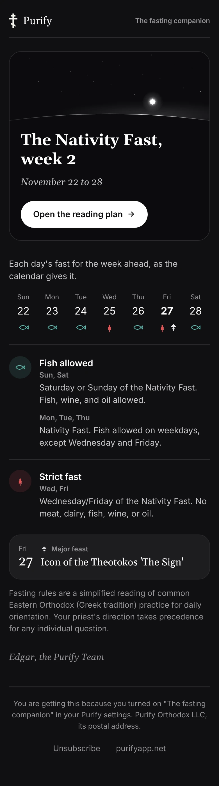
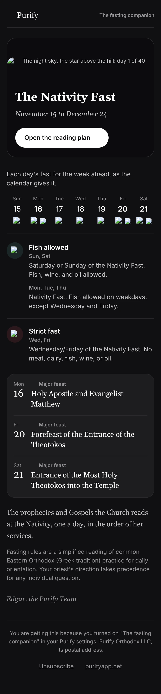
The default colours, in every email
These are the app's own default palette, and they are now the only colours any Purify email holds.
| In the email | The app's colour |
|---|---|
| The page | #101013, the app's page |
| A card | #1d1d20, the app's card |
| The night card | #0b0b0e, the app's well |
| Words | The app's white, and its quieter shares |
| The button, a feast's cross | White, and the app's glowing white #eaeaec |
| Each fast | The calendar's own: teal for fish, red for strict |
What was not the default, and is gone
Two things. In the fast, the fasting companion and the Sunday email wore the app's Night sky look: a navy page (#05070d) and a navy card (#0f1420). And every one of the nine emails turned to a second set of colours where a phone was set light: a white page, a grey card and a purple grey ink (#49424e), with feasts in red.
In all, each email held thirteen colours that were not the default, and the fast's emails six or seven more. Each now holds none, and a check fails any email that does.
In the fast
The Sunday email in the Nativity Fast. The night card was already the app's own well; the page and the card around it were navy.
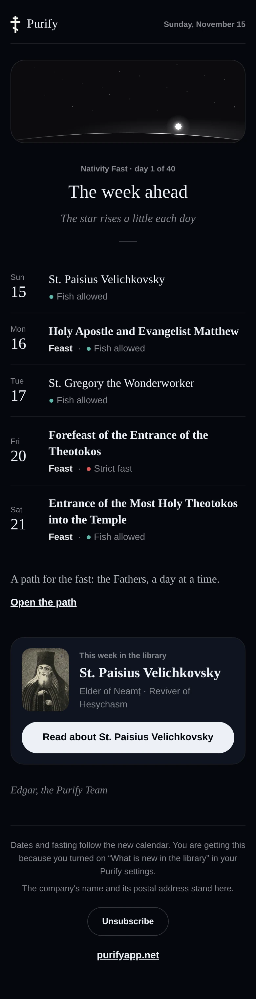
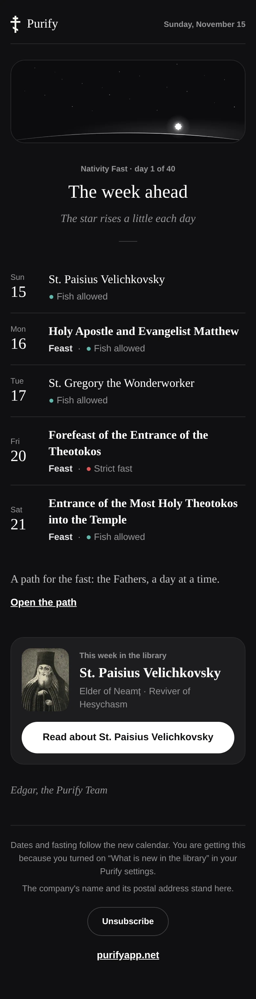
On a phone set light
The same four emails as a mail app that follows the phone's light setting drew them before, and as every mail app draws them now. The fasting companion turned white the same way.
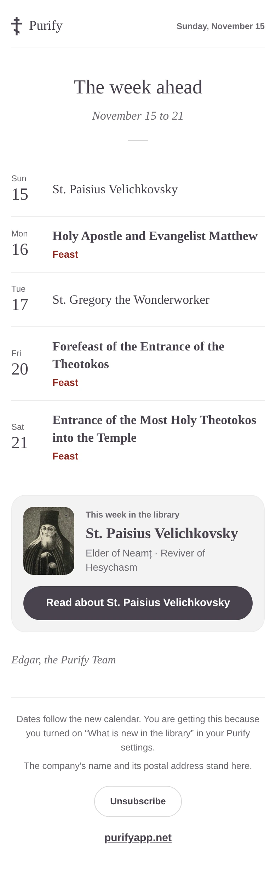
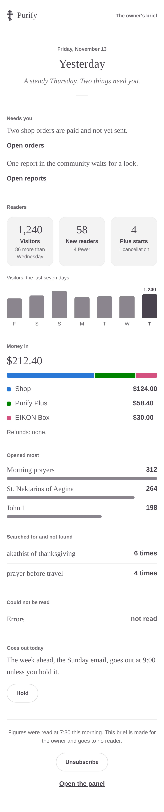
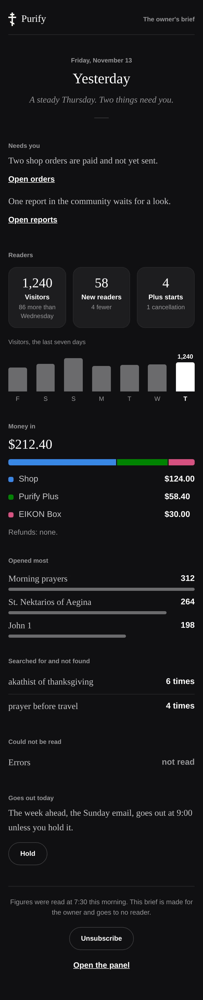
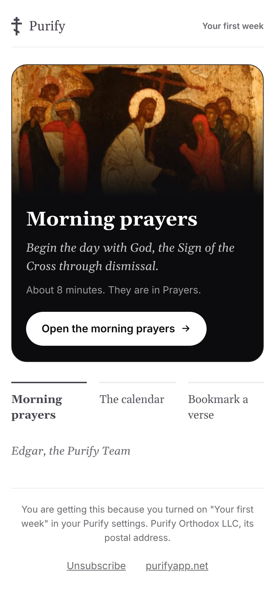
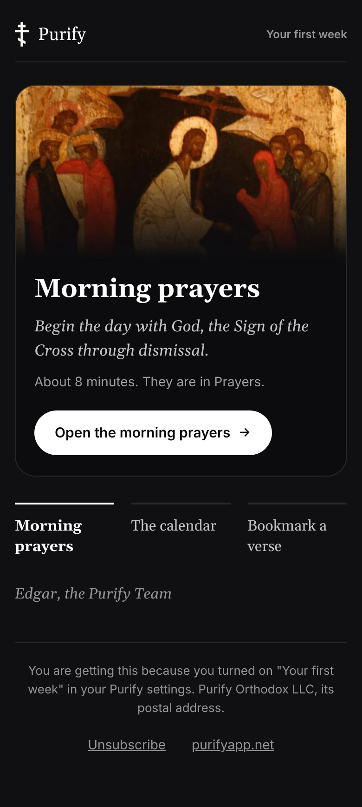
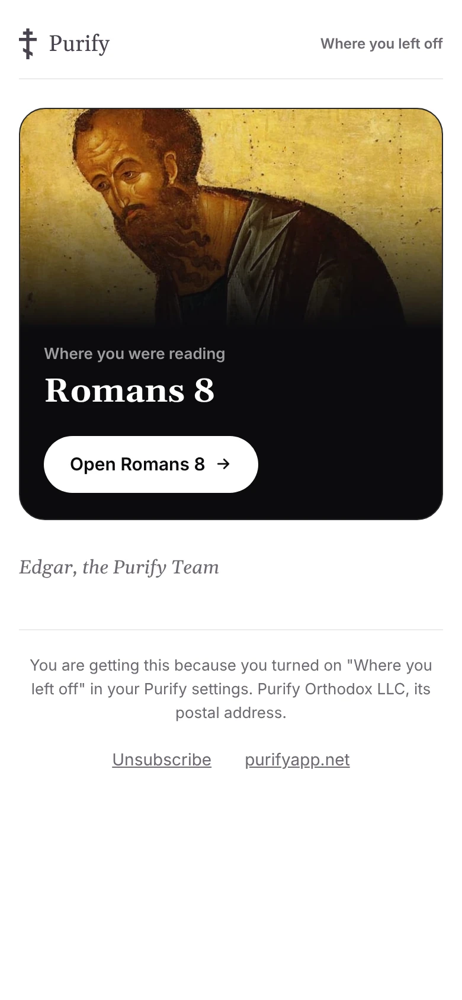
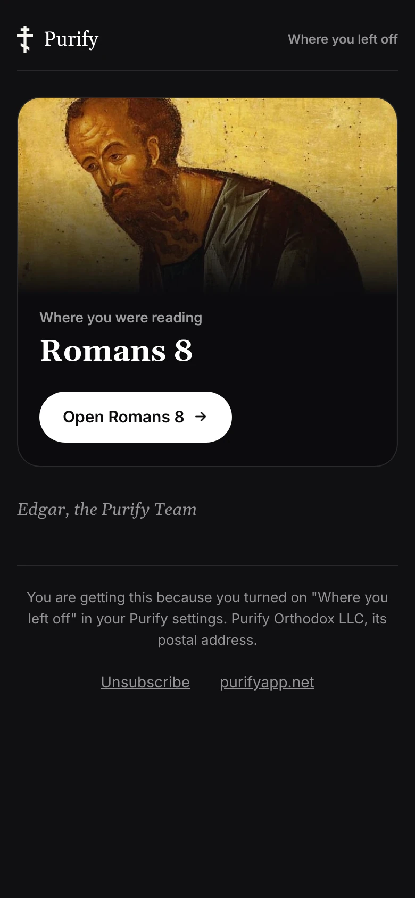
One palette, the app's default, on every screen
It is your word. There is a second reason: the light version was never one email for everyone. Gmail does not follow a phone's light setting inside an email, so a reader on Gmail saw the dark one while a reader on Apple Mail saw the white one.
For the reader
It looks like the app they open every day, and it is the same email whichever phone and mail app it is read in.
No Night sky in the fast
Night sky is one of the app's looks, a choice a reader makes for their own app. An email is Purify's own voice, so it wears Purify's default. The fast is still marked by the night card and its star, which were the default colours already.
For the reader
The fast's emails are known as Purify at a glance, beside every other email from Purify.
What did not change
On a dark screen the Sunday email outside a fast, your brief, the first week's three emails and where you left off are the same as you approved, to the pixel. Only colours moved, and only where they were not the default. The monthly note, the shop emails and the release letter are built from the same pieces and follow them.
The pictures
On your phone every picture on the last page was broken. That page pointed at the emails' pictures on purifyapp.net, and the main web does not hold them until 1.9 merges. This page carries its pictures as its own files, so they show now.
The real emails keep their purifyapp.net addresses, which work from the merge. No email in the new look goes out before then.
The check
| What was held | Result |
|---|---|
| Every colour written in each of the nine emails is the app's default, and nothing in an email turns on the phone's light or dark setting | Passed, nine of nine. The emails as they were fail it. |
| Each email at 360, 390, 412 and 1032 wide: contrast of 4.5 to 1 or more on every word, 44 tall targets, no rays, no sparkle, no side stripe, no em dash, Arabic's direction | Passed, thirty-six runs. |
| Nothing runs past a phone's edge, and no word is cut | Passed. |
| With every picture blocked, each email still says everything | Passed. |
| Each email under 100KB, so Gmail never clips it | Passed: 6.5 to 26KB. |
| No picture from the heritage list. No parchment. | Passed. |
| The app's own tests, with the change applied | Passed: 14,574 tests, the typecheck and the lint. |
Not done here, and still to do before any send: a look in real Gmail, Apple Mail and Outlook, with the phone set light and set dark. These stills are drawn by a browser.
What waits on your yes
On your yes the held change goes into the app in one step. The first email in the new look still goes to you alone before any reader has one.